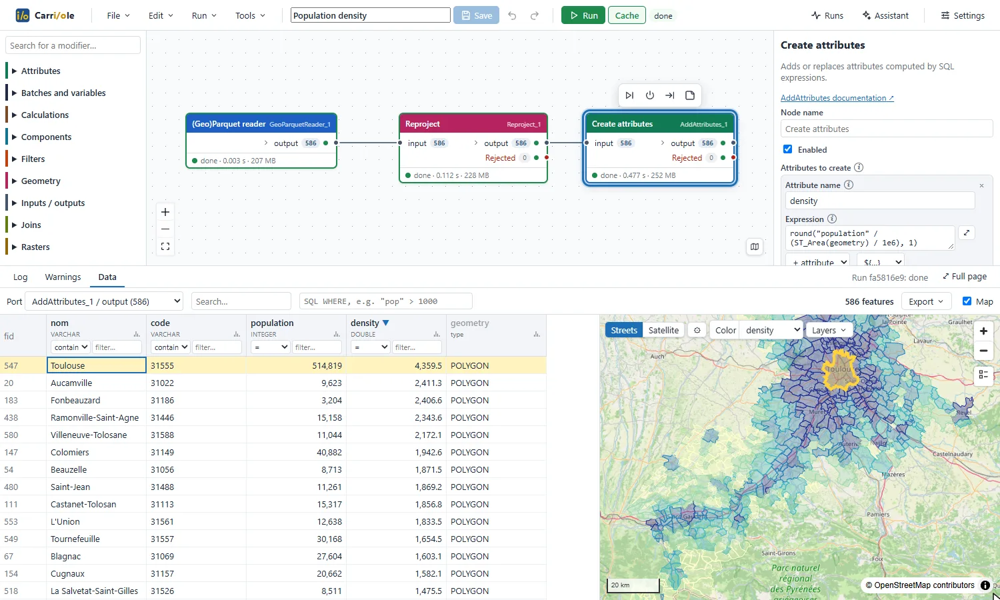
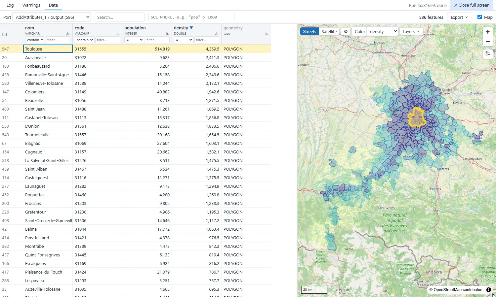
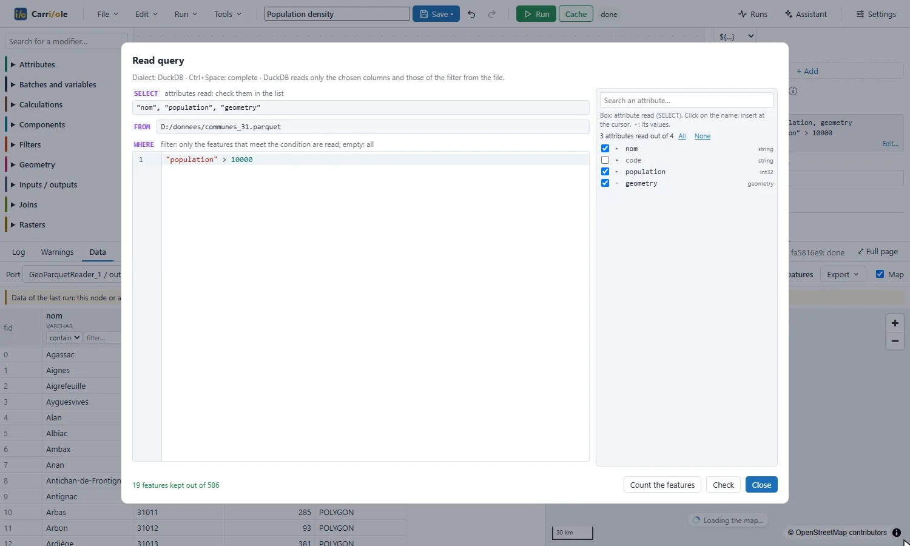

Process geographic data without writing code
Carriole is a desktop ETL for GIS: modifiers are assembled on a canvas, the flow is run, and every result can be checked on a table and a map.

Build, check, automate
Everything is done with the mouse and forms.
Build
Modifiers are dragged from the palette and connected output to input. Each parameter has its form, with help and a link to the documentation. Expressions and SQL are written with the list of attributes and their values a click away.
Check
A click on a node shows its output on a table (filters, sorting) and a map (colors by attribute, OpenStreetMap or satellite basemap). Before running, warnings point out a missing attribute or parameter.
Automate
Running again only recomputes what changed. A flow can run once per file of a folder or per value, and be scheduled. Flows are files the team shares.
Formats
Read and written, unless stated otherwise.
- Databases
- PostgreSQL / PostGISOracleSQLite / SpatiaLite
- Vector files
- GeoPackageShapefileMapInfo TAB / MIFGeoJSONFlatGeobuf(Geo)Parquet
- Tables
- CSV (WKT or X/Y)Excel
- Rasters
- GeoTIFFCOGJPEG 2000ASCII GridVRTNetCDF written as GeoTIFF or COG
- Web
- (Geo)Parquet over httpsSTAC searchWeb APIs (JSON) read
102 modifiers
By category; the catalogue describes each parameter.
Geometry 18
buffer, clip, dissolve, polygon overlay, reprojection, repair…
Attributes 18
create, rename, manage, convert, pivot, extract from JSON…
Rasters 17
raster calculator, terrain analysis, contour lines, zonal statistics, mosaic, STAC search…
Reading 11
one reader per format, files and databases
Writing 11
one writer per format; append and update in databases
Filters 6
by expression, spatial, by geometry type, duplicates, sample
Joins 5
attribute join, point in polygon, nearest neighbors, spatial relator
Calculations 6
statistics, aggregate, sort, counter, SQL on the inputs
Batches and variables 5
one run per listed file, variables, one file per group
Inputs / outputs 3
call a web API, SQL on a database, create features
Components 2
a flow reused as a modifier
Video


On your computer
- Installed with an .exe (Windows) or run as an AppImage (Linux); Python, GDAL, DuckDB and the projection grids are included.
- No server: Carriole reads and writes your files, network shares and databases with your own permissions.
- Internet is only used for the basemap and for the web sources your flows call.
- Interface in English and French.
- Optional AI assistant (Claude, OpenAI, OpenRouter, Ollama): it proposes changes to the flow; what it may read is configurable.
Download
| Windows 10 / 11 |
Carriole-Setup.exe Installer for all users of the computer. It is not code-signed: on the SmartScreen warning, choose “More info”, then “Run anyway”. |
|---|---|
| Linux x64 |
Carriole.AppImage Make the file executable ( chmod +x) and run it. No installation or admin rights needed.
|
For developers: an extra modifier is one Python file, added without rebuilding Carriole (guide). The etl command line is optional.
Libraries used
- Data
- DuckDB (Spatial), Apache Arrow, GDAL (pyogrio, Rasterio), Shapely / GEOS, PROJ / pyproj, NumPy
- Databases
- psycopg, python-oracledb, SQLite, SQLAlchemy
- Backend
- FastAPI, Uvicorn, Pydantic, Typer
- Interface
- React, React Flow, MapLibre GL JS, CodeMirror, TanStack Virtual, i18next, Zustand, Vite
- Desktop application
- Electron, electron-builder, uv, python-build-standalone
- Maps and data
- OpenStreetMap contributors, IGN transformation grids